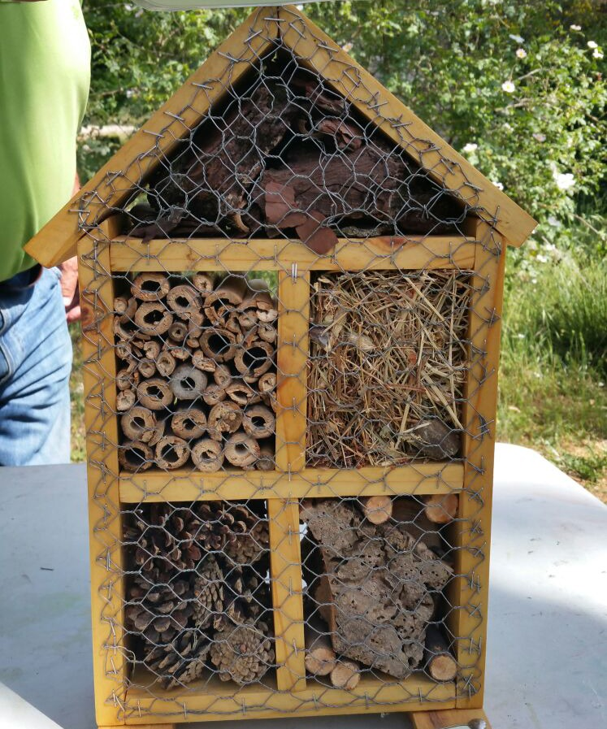

Salida
Actividad: Se plantea una salida al entorno natural (Birdwatch Asturias) con el objetivo de observar insectos en su hábitat y conocer su importancia para el ecosistema. Posteriormente, el alumnado realizará la construcción de un hotel de insectos en el aula, favoreciendo el respeto y cuidado del entorno.
- Durante la visita, el alumnado observará:
Diferentes tipos de insectos
Dónde viven
Qué hacen (polinizar, descomponer…)
Relación con el entorno - Registro de lo aprendido en el cuaderno de investigación por grupos:
He visto un insecto llamado ______
Vive en ______
Sirve para ______
- Iniciamos la construcción del hotel de bichos.
Los monitores de Birdwatch nos explican el material que necesitamos y nos van guiando para ir haciendo nuestro propio hotel de bichos, nos dividiremos en dos equipos y realizaremos dos, uno para el aula y otro para el huerto del centro.
